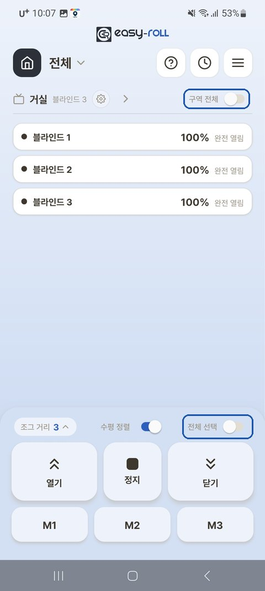

4. 여러 대 함께 사용
블라인드를 여러 대 설치했다면, 구역(방) 단위로 한꺼번에 제어하고 높이를 가지런히 맞출 수 있습니다.
구역으로 한꺼번에 제어
메인 화면에서 [구역 전체] 토글을 켜면 그 구역 전체가 선택되고, 제어판의 [전체 선택] 은 화면의 모든 블라인드를 선택합니다.

높이 가지런히 맞추기 — 수평 정렬
한 구역에서 여러 블라인드를 함께 올리거나 내린 뒤 멈추면, 움직인 블라인드들을 가장 위(올림) 또는 가장 아래(내림) 기준으로 높이를 자동으로 가지런히 맞춰 주는 기능입니다.
① 먼저 켜기 (구역별로 한 번만)
구역 이름 옆 ⚙ → [구역 기기 설정] → [수평 정렬 설정] → 맞추고 싶은 구역을 ON
💡 메인 화면 제어판의 [수평 정렬] 토글로도 켜고 끌 수 있어요.
② 사용하기
수평 정렬을 켠 구역에서 2대 이상을 함께 움직이면:
| 동작 | 결과 |
|---|---|
| 올림 후 정지 | 그중 가장 위에 맞춰 나머지가 정렬 |
| 내림 후 정지 | 그중 가장 아래에 맞춰 정렬 |
| 정지 버튼을 길게 누름 | 중간(평균) 높이로 정렬 |
| 멈춘 상태에서 [정지]를 다시 누름 | "위쪽 / 아래쪽 맞춤" 선택 팝업 → 고른 방향으로 정렬 |
💡 그때 움직인 블라인드만 정렬됩니다. (예: 4개 중 2개만 올렸다 멈추면 그 2개만 맞춰짐) 💡 블라인드 길이가 서로 달라도 하단바가 실제로 나란해지도록 맞춥니다.
💡 정렬 방향을 직접 고르고 싶을 때 — 블라인드가 멈춰 있는 상태에서 [정지]를 한 번 더 누르면 [위쪽에 맞춤] · [아래쪽에 맞춤] 팝업이 떠요. 원하는 쪽을 고르면 그 방향으로 가지런히 정렬됩니다.
ℹ️ 수평 정렬은 멈춘 뒤에 맞추는 방식이라, 정지 직후 끝에서 살짝 보정 움직임이 보일 수 있습니다. 정상입니다.
WiFi 신호가 약한 블라인드가 있다면
공유기에서 먼 블라인드는 신호가 약해 반응이 느릴 수 있습니다.
- 공유기를 블라인드들과 더 가까운 위치로 옮기거나, WiFi 증폭기(확장기)를 두면 좋아집니다.
- 한 대만 자꾸 느리거나 끊기면, 그 위치의 신호 세기를 점검해 보세요.